Module 04: Server Load Balancer (SLB)
Agenda & Learning Objectives
- SLB Concept & Architecture
- Classic Load Balancer (CLB)
- Application Load Balancer (ALB)
- Network Load Balancer (NLB)
- Gateway Load Balancer (GWLB)
- Backend Server Groups
- High Availability and Disaster Recovery
- Security Configuration
- Pricing Model
SLB Concepts: Single Instance
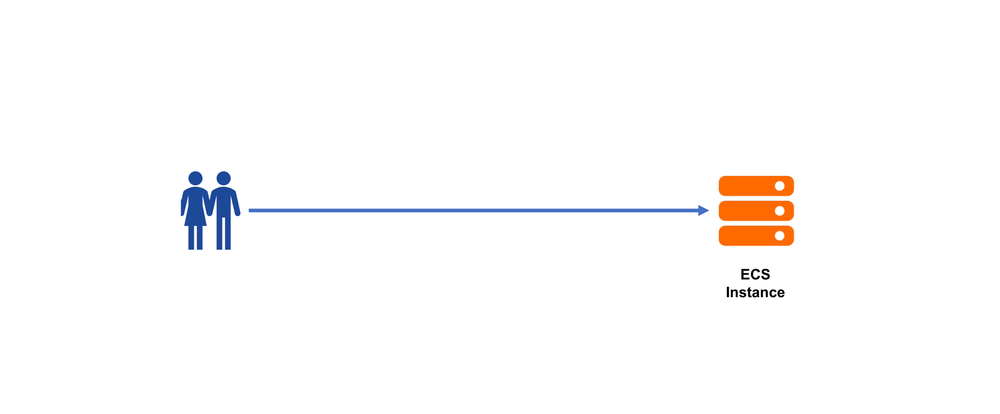
SLB Concepts: Traffic Surge
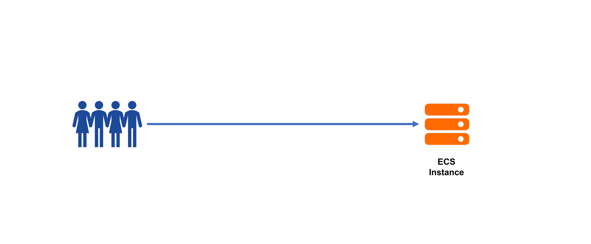
SLB Concepts: Horizontal Scaling
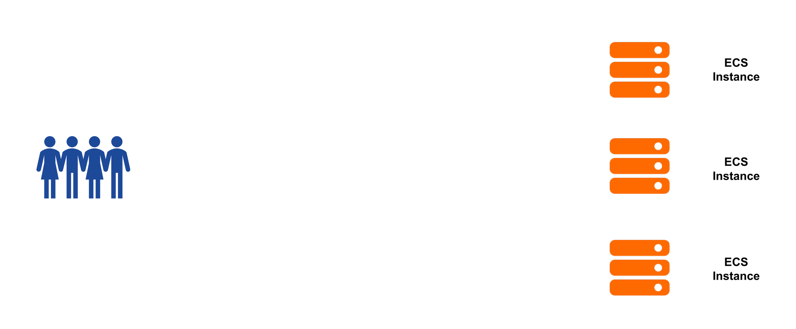
SLB Concepts: Routing Dilemma
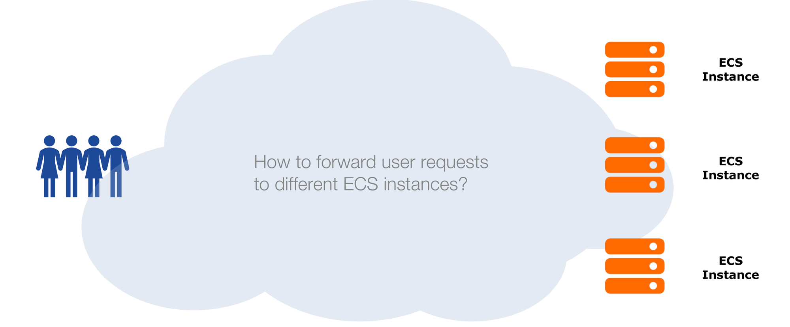
SLB Concepts: Load Balancer Solution
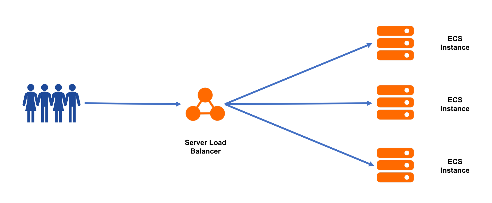
What is Server Load Balancer (SLB)?
SLB is a fully managed traffic distribution control service that automatically distributes incoming network and application traffic across multiple backend compute instances.
Compared to managing individual public IP addresses per server or deploying DIY software load balancers on virtual machines that introduce single points of failure and manual failover delays, SLB provides automated health detection, seamless elastic scaling, multi-zone disaster recovery, and integrated security inspection, ensuring uninterrupted application availability at cloud scale.
⚡ High Availability & Fault Tolerance
Automatic health checks shift traffic away from impaired servers with zero service downtime.
🚀 Elastic Hyper-Scale
Seamless scaling up to 100M concurrent connections on NLB and 1M QPS on ALB without capacity planning.
🎯 Intelligent Traffic Steering
Fine-grained Layer 7 routing by domain, path, header, query string, cookie, and method.
🔐 Enterprise Security Mesh
Integrated with Anti-DDoS, WAF 3.0, and hardware-accelerated SSL/TLS offloading.
📈 Automated Resource Elasticity
Eliminates rigid hardware load balancers via fully managed cloud-native traffic scaling.
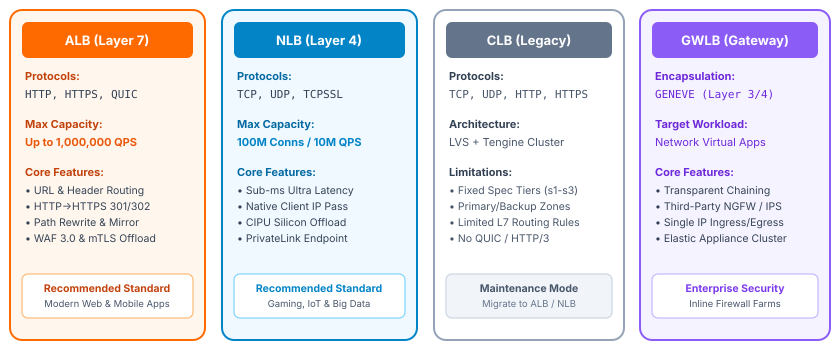
SLB Components
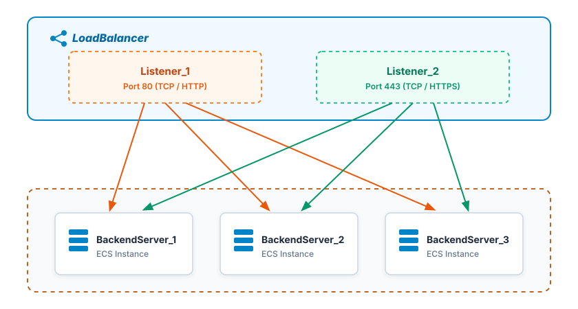
SLB Architecture
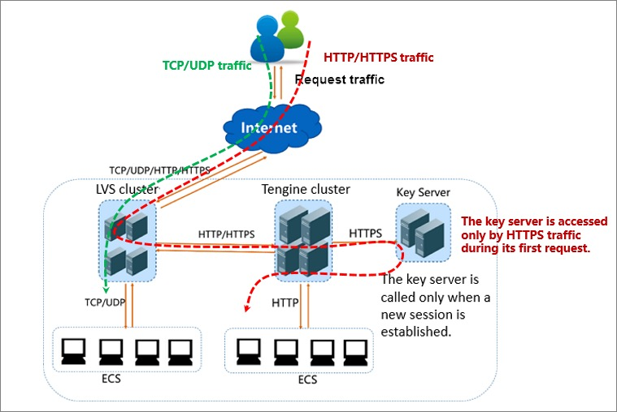
Classic Load Balancer (CLB)
Classic Load Balancer (CLB) Architecture
- Dual-Layer Engine: Uses Linux Virtual Server (LVS) with keepalived for Layer 4 traffic, and Tengine (an enhanced Nginx branch) for Layer 7 traffic.
- Fixed Capacity Specifications: Offered in fixed performance tiers (e.g.,
slb.s1.smalltoslb.s3.large) or shared performance models. - Primary / Secondary Zone DR: Operates in an active-standby primary/secondary zone failover model rather than multi-zone active-active.
- Legacy Scope: Maintained for existing customer architectures; no new major Layer 7 features are added to CLB.
The Modern Migration Imperative
- Why Migrate to ALB (Layer 7): ALB provides up to 1,000,000 QPS, supports QUIC (HTTP/3), native gRPC, multiple certificate SNI, and fine-grained URL/header-based forwarding rules that CLB cannot deliver.
- Why Migrate to NLB (Layer 4): NLB delivers 100M concurrent connections, native client source IP preservation without Proxy Protocol, sub-millisecond latency, and active-active multi-zone scaling.
- Smooth Migration Tooling: Alibaba Cloud provides one-click CLB-to-ALB and CLB-to-NLB migration tools with automated configuration cloning and DNS canary traffic shifting.
CLB Topology
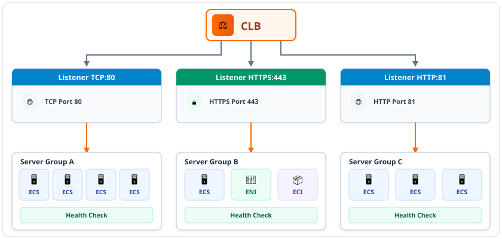
Application Load Balancer (ALB)
Cloud-Native Microservices Architecture
- Decoupled Control & Data Planes: Built on Alibaba Cloud's proprietary NFV (Network Functions Virtualization) platform with completely independent scaling of management operations and packet processing.
- Massive Layer 7 Elasticity: A single ALB instance scales dynamically up to 1,000,000 QPS with automated cross-zone traffic balancing.
- Modern Protocols: Native support for HTTP/1.1, HTTP/2, gRPC microservices, WebSockets, and QUIC (HTTP/3).
- Dynamic Elastic Scaling: Automatically adapts packet processing throughput in real-time according to application load spikes, eliminating the need to pre-allocate fixed capacity tiers.
Kubernetes Ingress & Container Native
- Official Ingress Controller: Seamlessly acts as the enterprise Ingress controller for Container Service for Kubernetes (ACK) and Serverless Kubernetes (ASK).
- Pod-Level Direct Routing: Bypasses NodePort and kube-proxy overhead by routing traffic directly to Kubernetes Pod IPs using Terway CNI.
- Zero Downtime Deployments: Integrates natively with rolling updates, blue-green deployments, and canary traffic shifting.
- Zone-Independent Addressing: Allocates an elastic VIP in each selected Availability Zone for multi-zone fault resilience.
ALB Topology
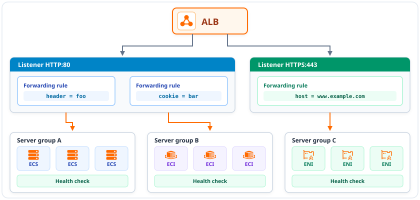
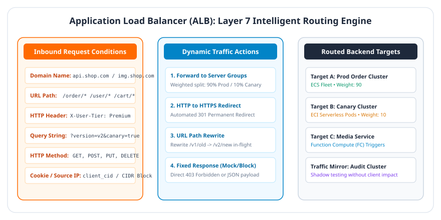
Advanced Traffic Actions
Weighted Forwarding (Canary)
- Traffic Shifting: Forward requests across multiple server groups with percentage weights (e.g., 90% Prod / 10% Canary).
- Zero Downtime: Dynamically adjust canary weights on-the-fly via console or API without service restart.
HTTP to HTTPS Redirection
- Edge 301/302 Redirect: Automatically redirect unencrypted HTTP (80) requests to HTTPS (443) directly at the ALB edge.
- URI & Query Preservation: Retains full path and query parameters without burdening backend compute servers.
URL Path Rewriting
- Path Transformation: Rewrite request URLs before reaching backends (e.g.,
/v1/userto/user). - Header Modification: Insert, remove, or modify custom HTTP headers in-flight.
Traffic Mirroring & Fixed Response
- Traffic Mirroring: Duplicate live production traffic to staging/audit clusters for zero-impact shadow testing.
- Fixed Response: Return immediate HTTP status codes (200, 403, 503) with custom JSON/HTML directly from ALB.
QUIC Protocol (HTTP/3)
Next-Generation Transport Architecture
- UDP-Based Protocol: QUIC (Quick UDP Internet Connections) operates over UDP, serving as the foundational transport layer for HTTP/3.
- Zero Head-of-Line Blocking: Unlike TCP, packet loss on one stream does not stall data transmission on other multiplexed streams within the same connection.
- Zero-RTT Connection Setup: Combines cryptographic and transport handshakes to achieve 0-RTT connection re-establishment for returning clients.
- Native ALB Offload: ALB terminates QUIC connections at the edge and proxies traffic to backend servers over optimized HTTP/1.1 or HTTP/2.
Connection Migration for Mobile Networks
- Connection ID Addressing: QUIC identifies connections using a 64-bit Connection ID rather than the traditional 4-tuple (source IP, source port, dest IP, dest port).
- Seamless Network Handoff: When a user transitions from Wi-Fi to cellular 4G/5G, the client IP changes; QUIC seamlessly migrates the session without dropping active video streams or downloads.
- Mobile App Performance: Drastically reduces latency in poor network environments (weak signal, packet loss up to 20%), making it indispensable for live streaming and gaming.
Network Load Balancer (NLB)
Ultra-High Throughput & CIPU Acceleration
- Hardware-Accelerated Forwarding: Built on Alibaba Cloud Cloud Infrastructure Processing Unit (CIPU) for line-rate packet processing with zero host CPU degradation.
- Massive Concurrency: Delivers up to 100,000,000 concurrent connections and 10,000,000 new CPS per instance with automated cross-zone scaling.
- Sub-Millisecond Latency: Operates at deterministic ultra-low latency (< 0.5 ms), optimized for high-frequency trading, gaming, and real-time IoT.
- Layer 4 Protocols: Native support for TCP, UDP, and hardware-accelerated TCPSSL offload for secure transport without backend SSL overhead.
Source IP Preservation & Enterprise Networking
- Native Client IP Pass-Through: Preserves original client source IP directly in the Layer 3 IP packet header with zero encapsulation or NAT overhead.
- Zero Application Changes: Backend applications read real client IPs seamlessly via standard socket APIs (
getpeername()). - Multi-Zone Active-Active: Deploys elastic VIPs across multiple availability zones with automated traffic distribution and local failover.
- Proxy Protocol v2 Support: Provides native support for Proxy Protocol v2 header insertion when downstream proxy metadata is required.
NLB Topology
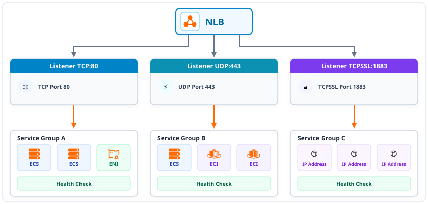
Gateway Load Balancer (GWLB)
Inline Virtual Appliance Chaining & Elasticity
- Third-Party Appliance Integration: Cloud-native Layer 3 gateway designed for deploying and scaling third-party virtual network appliances (Palo Alto, Fortinet, Check Point NGFWs, IDS/IPS).
- GENEVE Protocol Encapsulation: Encapsulates client traffic into GENEVE tunnels over UDP port 6081, preserving original packet IP headers and metadata without NAT.
- Symmetric Flow Routing: Guarantees strict bidirectional flow symmetry; both request and response packets for a connection traverse the exact same firewall appliance instance.
- Elastic Firewall Farm: Automatically balances traffic across an auto-scaling cluster of firewall instances, eliminating bandwidth choke points and single points of failure.
PrivateLink Decoupling & Centralized Security VPC
- PrivateLink-Powered Decoupling: Connects business VPCs to the centralized security inspection VPC via GWLB Endpoints (GWLBe) without complex VPC peering meshes.
- Zero IP Architecture Overlap: Preserves complete network isolation; business VPCs and security inspection VPCs can utilize independent or overlapping CIDR blocks.
- Multi-Tenant Security Hub: A single centralized security VPC hosting GWLB can inspect traffic originating from multiple independent application VPCs concurrently.
- Transparent Health Failover: Health check mechanisms continuously monitor NVA health; failed firewall appliances are isolated within seconds with zero session disruption.
GWLB Topology
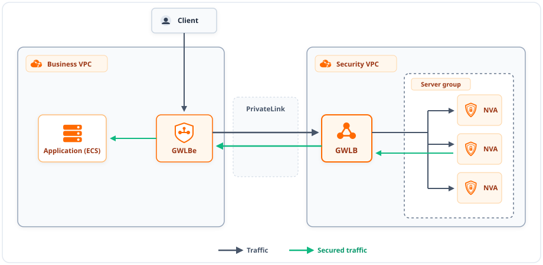
Traffic Scheduling Algorithms
Weighted Round Robin (WRR)
CLB • ALB • NLB- Sequential Rotation: Distributes requests across backend servers in order based on assigned integer weights (1–100).
- Best For: Stateless web applications with uniform request processing times.
Weighted Least Connections (WLC)
CLB • ALB • NLB- Dynamic Concurrency: Routes incoming traffic to the server with the lowest active-connections-to-weight ratio.
- Best For: Long-lived connections, database sessions, and variable query workloads.
Consistent Hash
ALB • NLB • GWLB- Sticky Affinity: Hashes client Source IP or 5-tuple to backend servers with minimal disruption during scaling.
- Best For: Stateful Layer 4 services, gaming servers, and cached web workloads.
QUIC Connection ID Hash
ALB Only- Session Mobility: Routes requests based on 64-bit QUIC Connection ID, persisting sessions across IP changes.
- Best For: Mobile applications, live video streaming, and Wi-Fi/cellular handoffs.
Backend "Server Groups"
Server / Instance Type
CLB • ALB • NLB • GWLB- Target Types: Standard ECS instances, Elastic Container Instances (ECI), and Elastic Network Interfaces (ENIs).
- Multi-Port Binding: Attach the same compute instance multiple times across different listening ports (e.g., 8080 and 8081).
- Dynamic Weights & Elasticity: Configurable weights (0–100); integrates natively with Auto Scaling for automatic fleet elasticity.
IP Type (Private IPs)
ALB • NLB • GWLB- Private Addressing: Target backend endpoints directly by private IPv4 / IPv6 addresses without requiring cloud instance IDs.
- Hybrid & Cross-VPC: Route traffic to on-premises servers via Express Connect/VPN or cross-VPC resources via CEN Transit Router.
- Virtual Appliance Tunnels: GWLB routes traffic to third-party firewall/NVA IP targets encapsulated via GENEVE (UDP port 6081).
Function Compute Type
ALB Only- Serverless Event Ingress: Routes incoming HTTP/HTTPS requests directly to Alibaba Cloud Function Compute (FC) routines.
- Zero Server Administration: Pure event-driven execution with zero server instances to provision, patch, or maintain.
- Unified API Entry Point: Combines microservices, static assets, container pods, and serverless functions under a single unified domain and port.
Health Check: HTTP/HTTPS & TCP Detection
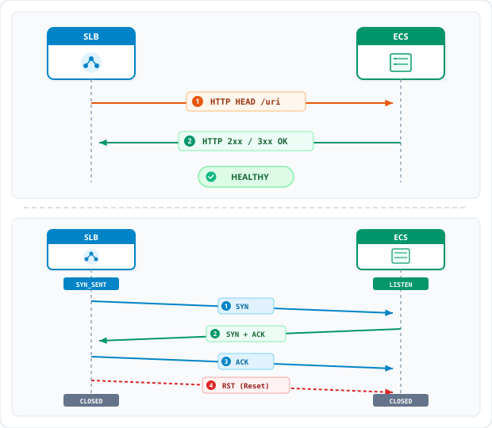
HTTP / HTTPS Probing (Layer 7)
- Request Method: Probes send an HTTP
HEADorGETrequest to a specified URI path (e.g.,/healthz) on backend instances. - Status Code Validation: Deemed healthy if backend returns an HTTP
2xxor3xxstatus code within the timeout threshold. - Application-Aware: Verifies actual web server and application health beyond raw port availability.
TCP Handshake Probing (Layer 4)
- Three-Way Handshake: SLB node sends a
SYNpacket to backend port; instance responds withSYN+ACK. - Immediate Reset (RST): SLB immediately replies with
RSTto cleanly close probe without leaving half-open connections. - Minimal Overhead: Lightweight and protocol-agnostic; validates backend socket listener responsiveness.
Health Check: Layer 4 UDP Probing & ICMP Detection
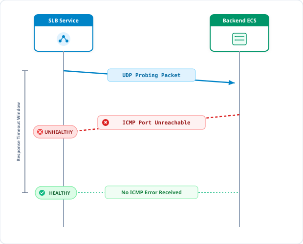
UDP Probing & ICMP Evaluation
- Probing Mechanism: SLB sends custom UDP request packets from internal CIDRs (
100.64.0.0/10) to backend target ports. - ICMP Unreachable Detection: If backend port is closed or process halted, the OS kernel returns an ICMP
Port Unreachablepacket. - Health Determination:
- Unhealthy: Receiving ICMP Port Unreachable packet marks backend as down.
- Healthy: Normal UDP response received, or absence of ICMP errors within the response timeout.
- OS Rate Limiting Requirement: Backend Linux kernel must allow ICMP errors; ensure
icmp_ratelimit = 0to avoid false positives.
Session Persistence (Sticky Sessions)
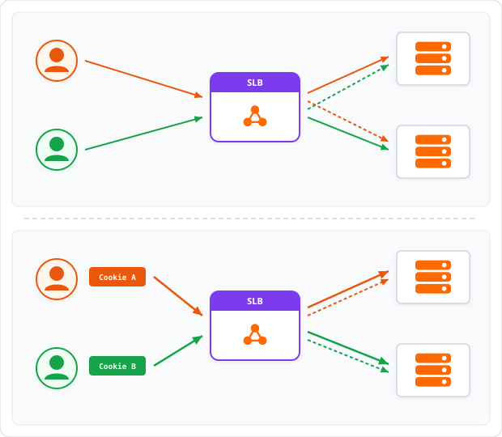
Sticky Session Principles
- Session Affinity: Binds consecutive requests from the same client to the same backend server instance.
- Cookie Insertion (ALB): Injects an encrypted tracking cookie (
ALBSID) with configurable duration (1s–7 days). - Cookie Rewriting (ALB): Tracks existing application session cookies (e.g.,
JSESSIONID). - Source IP Hash (NLB/CLB): Routes based on client IP address with a persistence timeout.
- Note for Enterprise NAT: Cookie insertion avoids NAT load imbalance by tracking individual browser sessions instead of shared egress IPs.
Multi-Zone Disaster Tolerance
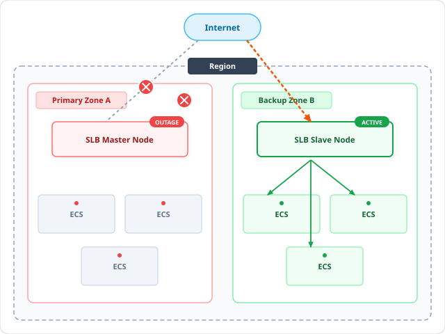
Primary & Backup Zone Architecture
- Primary / Backup Zone Deployment: SLB instances establish an active Master Node in a Primary Zone and a standby Slave Node in a Backup Zone.
- Automated Sub-30s Failover: If the Primary Zone suffers an outage or becomes unavailable, SLB rapidly switches to the Backup Zone within 30 seconds.
- Automated Failback: When the Primary Zone recovers and passes health checks, SLB automatically switches back to the Primary Zone.
- Cross-Zone Traffic Balancing: The active node dynamically distributes requests across healthy backend ECS instances in both zones during normal operations.
Cross-Region Disaster Tolerance
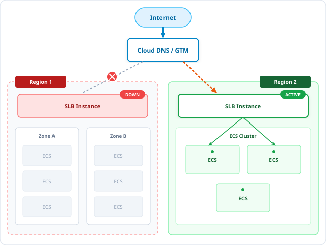
DNS-Driven Inter-Region Resilience
- Cross-Region Redundancy: Deploy independent SLB instances across geographically separated regions (e.g., China East 1 and China North 1).
- Intelligent DNS Resolution: Alibaba Cloud DNS / Global Traffic Manager (GTM) resolves domain names to the virtual IP (VIP) addresses of the regional SLB instances.
- Health-Driven Failover: Continually probes regional SLB endpoints; if an entire region fails, DNS redirects client traffic to the secondary region.
- Regional Scope Isolation: Individual SLB instances balance traffic only within their local region; cross-region distribution is orchestrated at the DNS layer.
Multi-Cloud Traffic Distribution
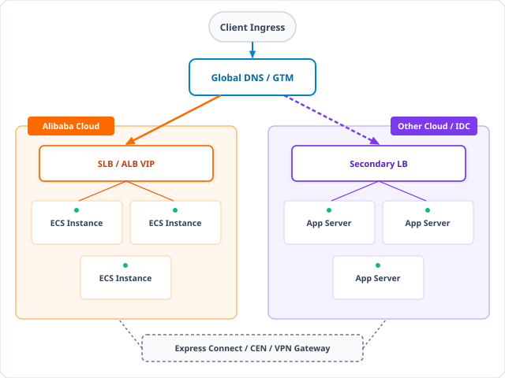
Hybrid & Multi-Cloud Traffic Management
- Heterogeneous Ingress: Alibaba Cloud GTM and DNS direct client traffic across Alibaba Cloud, secondary cloud providers, and on-premises IDCs.
- Active-Active & Active-Standby: Supports weighted proportional traffic distribution or automated failover across cloud provider boundaries.
- Private Hybrid Interconnect: Cloud Enterprise Network (CEN), Express Connect, and VPN Gateway link internal VPCs directly with remote datacenters.
- Vendor Lock-in Mitigation: Empowers mission-critical enterprise workloads with multi-cloud high availability and disaster tolerance.
Auto Scaling Integration
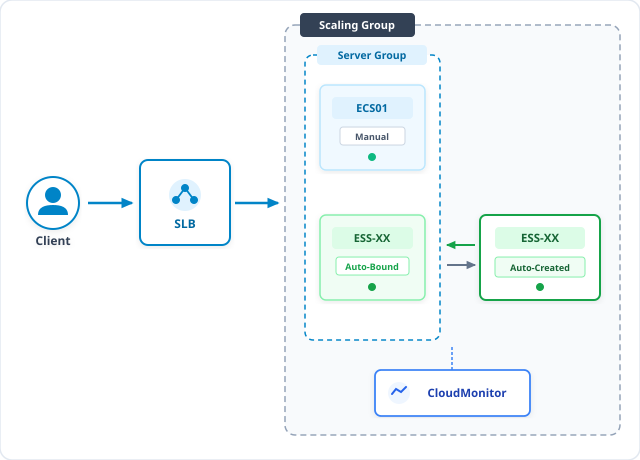
Automated Elastic Binding
- Dynamic Target Registration: When Auto Scaling spins up new ECS instances (
ESS-XX) during traffic surges, they are automatically bound to the SLB backend server group. - Slow Start: Enable the Slow Start feature on ALB server groups to gradually ramp up request volume to newly added backend servers over a configured duration (30–900 seconds), allowing servers to warm up and preventing sudden traffic surges from overwhelming connection pools.
- Graceful Connection Draining: When scale-in occurs, SLB stops sending new requests to terminating instances while allowing in-flight connections to complete gracefully.
- Health-Driven Replacement: Impaired ECS instances flagged unhealthy by SLB health checks are automatically terminated and replaced by Auto Scaling.
Security-in-Transit
Hardware-Accelerated SSL Offloading
- Centralized Cryptographic Termination: SSL/TLS handshakes and decryption are performed directly on the SLB proxy tier, offloading CPU-intensive cryptography from backend application servers.
- Modern Ciphers & TLS 1.3: Supports TLS 1.0, 1.1, 1.2, and TLS 1.3 with customizable security cipher policy suites.
- SSL Certificate Management: Native integration with Alibaba Cloud Certificate Management Service; automated certificate renewal and one-click deployment.
- HTTP/2 & QUIC Acceleration: Delivers multiplexed binary framing over HTTPS connections for faster web rendering.
SNI Multi-Certificate & Mutual TLS (mTLS)
- Server Name Indication (SNI): Bind up to 25+ distinct SSL certificates to a single HTTPS listener port (443); ALB serves the exact matching domain certificate based on client SNI negotiation.
- Mutual TLS (mTLS): Enforce two-way certificate verification where both the server and client validate cryptographic certificates.
- Zero-Trust Client Authentication: Perfect for B2B financial APIs, banking gateways, and IoT device authentication.
- Custom CA Certificates: Upload and bind enterprise root or intermediate CA certificate bundles to verify client-issued certificates.
WAF and Anti-DDoS Protection
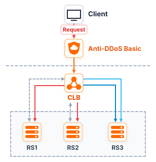
Multi-Tiered Security Perimeter
- Anti-DDoS Basic (Default Shield): Every public SLB instance includes default DDoS mitigation up to 5 Gbps defending against SYN floods, UDP floods, ACK floods, and ICMP floods.
- Flow Cleaning & Black Hole: Inbound traffic exceeding baseline bandwidth triggers automated traffic cleaning; extreme attacks trigger black hole routing to protect cloud infrastructure.
- Anti-DDoS Pro / Premium: Attach Anti-DDoS Pro/Premium dedicated scrubbing centers for unlimited Tbps-level volumetric attack mitigation.
- Cloud-Native WAF 3.0 Integration: ALB seamlessly integrates with Web Application Firewall (WAF 3.0) inline without requiring CNAME DNS redirection, inspecting traffic for SQL injection, XSS, and CC bot attacks.
Access Control & Network Perimeter
Listener Access Control Lists (ACLs)
- Whitelist Mode: Accepts traffic strictly from designated IP addresses or CIDR blocks; all other traffic is rejected. Ideal for private partner APIs and staging environments.
- Blacklist Mode: Blocks traffic from specified malicious IP addresses while allowing all other internet traffic.
- Reusable ACL Profiles: Define an ACL profile once and bind it across multiple listeners simultaneously.
- Edge Perimeter Filtering: Enforce boundary traffic filtering directly at the SLB edge proxy before packets reach internal networks.
Security Group Binding on ALB & NLB
- Direct Security Group Association: Attach VPC Security Groups directly to ALB and NLB elastic network interfaces.
- Stateful Microsegmentation: Define stateful port, protocol, and CIDR rules directly at the load balancer entry point.
- Defense-in-Depth Architecture:
- Perimeter: SLB Security Group allows public internet access strictly on ports 80/443.
- Backend Fleet: ECS Security Group permits inbound traffic strictly from the SLB internal CIDR, blocking all direct internet exposure.
Monitoring and Logging
CloudMonitor Telemetry
- Traffic Metrics: Tracks inbound/outbound bandwidth, packet rates, and active/inactive connection counts.
- HTTP Response Metrics: Monitors QPS, average latency, upstream response times, and 2xx/3xx/4xx/5xx status codes.
- Automated Alarms: Configurable threshold alerts triggered on high 5xx error spikes or backend unhealthy instance counts.
- Unified Dashboards: Visualize aggregate fleet health across regions from a single operational pane.
SLS Access Logging
- Full Request Provenance: Automatically streams detailed access logs directly to Simple Log Service (SLS).
- Comprehensive Log Schema: Captures client IP, request URI, HTTP method, user agent, latency, SSL cipher, and upstream server IP.
- Real-Time SQL Analytics: Execute fast SQL queries across millions of log records to troubleshoot errors and slow requests.
- SIEM Integration: Ingest logs into security information and event management systems for audit compliance.
Tracing & Health Insights
- Distributed Tracing: Injects W3C trace context headers (
traceparent) for end-to-end distributed tracing. - Application Real-Time Monitoring (ARMS): Correlates edge SLB metrics with backend microservice execution bottlenecks.
- Health Check Diagnosis: Detailed diagnostic logging identifying the exact root cause of backend health check failures.
- Change Tracking: All configuration updates are recorded in ActionTrail for forensic audit compliance.
SLB Pricing Models
Pricing Models by Product Family
- Classic Load Balancer (CLB): Pay an instance rental fee (waived for private intranet instances) plus fixed specification tiers (e.g.,
slb.s1.smalltoslb.s3.large), plus outbound public internet traffic. - ALB & NLB (Elastic LCU): Hourly instance fee per Availability Zone + Pay-as-You-Go Load Balancer Capacity Units (LCU) + EIP/CBWP for public data transfer.
- Gateway Load Balancer (GWLB): Billed for GWLB instance hours, GWLB Endpoint (GWLBe) hours, and GWLB LCU consumption. Backend third-party virtual firewalls (e.g., Palo Alto, Fortinet) are licensed separately via BYOL or Marketplace.
- Private vs. Public Instances: Private CLB incurs zero instance fees; ALB, NLB, and GWLB charge instance/endpoint fees and LCU usage regardless of network deployment type.
Capacity Unit (LCU) Dimensions
- ALB LCU Metrics (hourly fee based on peak of):
- 25 new connections/sec (HTTPS) or 40 new/sec (HTTP).
- 350 concurrent connections (HTTPS) or 500 concurrent (HTTP).
- 1 GB processed data transfer per hour.
- 1,000 rule evaluations per second.
- NLB LCU Metrics (hourly fee based on peak of):
- 800 new TCP connections/sec or 400 new UDP/sec.
- 50,000 concurrent TCP connections or 12,500 UDP.
- 1 GB processed data transfer per hour.
- GWLB LCU Metrics (hourly fee based on peak of):
- New packet flows/sec, concurrent active flows, and processed GENEVE data volume.
- Billing Formula: Total Hourly LCU Fee = Max(Dimensions) × Unit Price.
Practice Scenario 1: Microservices Dynamic Routing & Canary Deployment
1. Client requests to
/order/* must route to a high-capacity order processing fleet, while requests to /user/* must route to an identity fleet.
2. When releasing new order microservice versions, 10% of traffic must be directed to a canary cluster, while 90% remains on the stable production fleet.
3. All legacy HTTP (Port 80) traffic must automatically redirect to HTTPS (Port 443) with zero traffic forwarded to backend servers.
Which load balancing architecture satisfies all requirements?
- A Deploy Classic Load Balancer (CLB) with Primary-Secondary server groups, and configure Nginx rewrite rules on each backend ECS instance.
- B Deploy Application Load Balancer (ALB); configure an HTTP:80 listener with a 301 Redirect action to HTTPS:443; configure HTTPS:443 forwarding rules with URL path matching and weighted server groups (90% Prod / 10% Canary).
- C Deploy Network Load Balancer (NLB) with Weighted Round Robin scheduling, and configure IP Server Groups pointing to external Nginx reverse proxies.
- D Deploy Gateway Load Balancer (GWLB) with GENEVE encapsulation, and route traffic through an elastic cluster of third-party proxy firewalls.
Scenario 1: Solution & Architectural Analysis
/order/* vs /user/*) and supports weighted multi-server group forwarding (90/10 canary split).
/order/*) or execute HTTP redirects. Introducing self-managed Nginx proxies creates high operational overhead.
Practice Scenario 2: Ultra-High Concurrency Gaming & Source IP Preservation
1. The load balancer must handle rapid traffic bursts and tens of millions of concurrent TCP and UDP sessions with sub-millisecond network processing latency.
2. Backend game servers must receive the genuine client source IP address natively in packet IP headers without decoding Proxy Protocol headers or HTTP headers.
3. Traffic must be balanced across multiple Availability Zones with active-active resilience.
Which load balancing solution fulfills all criteria?
- A Deploy Classic Load Balancer (CLB) with an active-standby primary/backup zone configuration.
-
B
Deploy Application Load Balancer (ALB) and configure backend game servers to parse the
X-Forwarded-Forheader. - C Deploy Network Load Balancer (NLB) across multiple Availability Zones with native client source IP pass-through enabled.
- D Provision an Internet NAT Gateway with DNAT port forwarding rules mapped to ECS game servers.
Scenario 2: Solution & Architectural Analysis
Practice Scenario 3: Multi-Zone Payment Gateway & Session Persistence
1. The platform must maintain high availability across three Availability Zones with automated cross-zone load balancing.
2. Shoppers completing multi-step checkouts from corporate networks behind shared NAT proxies must remain bound to the same backend application server throughout their session.
3. The entry point must enforce mutual TLS (mTLS) with client certificate verification for registered merchant terminals, while inspecting all inbound traffic against OWASP Top 10 vulnerabilities.
Which architecture fulfills this banking-grade mandate?
- A Deploy Classic Load Balancer (CLB) with Source IP hash scheduling and Anti-DDoS Basic.
- B Deploy Application Load Balancer (ALB) across 3 AZs; configure cookie-based session persistence; enable mTLS with merchant CA certificate verification; integrate with WAF 3.0.
- C Deploy Network Load Balancer (NLB) with TCPSSL listeners, configuring Source IP persistence with a 1,000-second timeout.
- D Deploy multiple standalone ECS reverse proxies across zones, each running self-signed OpenSSL certificates and IP tables rules.